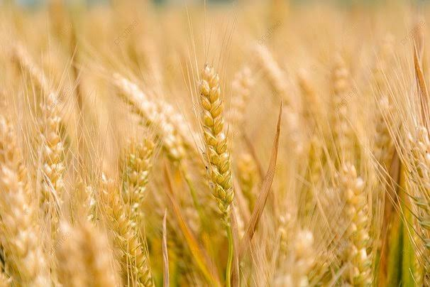

In developing regions, smallholder farmers face numerous challenges, including unpredictable weather, limited resources, and market volatility. To address these issues, we propose the Agri-Intelligence Platform, a mobile-based solution designed to provide essential agricultural information to farmers.
The Agri-Intelligence Platform aims to enhance food security, promote rural development, and drive economic growth in these communities by improving agricultural productivity. By providing farmers with the tools and knowledge they need to succeed, this innovative solution supports smallholder farmers in overcoming the challenges they face and achieving sustainable agricultural success. The Agri-Intelligence Platform has the potential to make a significant impact on the lives of smallholder farmers and their communities. By providing them with access to valuable information and resources, we can help them increase their income, improve their livelihoods, and build more resilient agricultural systems. Ultimately, this platform is an important step towards creating a more food-secure and sustainable future for smallholder farmers in developing regions.